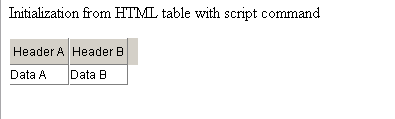

Initialization of grid from HTML
dhtlmxGrid can be initialized from an HTML markup. This allows to convert the existing tables to active grids, or you can generate the data as an HTML table and convert it into the grid, instead of working with a raw XML.
There are two ways to initialize the grid from the HTML. In both cases you need to add codebase/ext/dhtmlxgrid_start.js file to the page
Initialization by a special command
A table can be converted to the grid by dhtmlXGridFromTable command:
<table id="some_table">
<tr>
<td>Header A</td><td>Header B</td>
</tr>
<tr>
<td>Data A</td><td>Data B</td>
</tr>
...
</table>
<script>
var grid = dhtmlXGridFromTable("some_table")
</script>
Before the initialization:
After the initialization:

Automatic initialization by a CSS class
<table id="some_table" class="dhtmlxGrid">
<tr>
<td>Header A</td><td>Header B</td>
</tr>
<tr>
<td>Data A</td><td>Data B</td>
</tr>
...
</table>
The initialization by a CSS class will work only for those tables which were on page at the moment of loading. If the page was created dynamically or loaded by some kind of AJAX, only the direct initialization method can be used.
Pay your attention to the following: you need to use only one of the above mentioned methods (not both at the same time).
Grid configuration during loading from HTML
The first row of the label will be used as grid headers. You can use some attributes to define the properties of grid's columns (all of them are optional).
<table class="dhtmlxGrid">
<tr>
<td width="150" align="left">Column 1</td>
<td type="co" sort="str">Column 2</td>
<td type="edn" format="0,000.00">Column 3</td>
<td>Column 4</td>
</tr>
- width - the width of a column in pixels, by default the width of a column in the source table will be taken;
- align - the align of data in a column;
- sort - the type of sorting used against a column;
- type - the cell type ("ro" by default);
- format - the data format (can be used against edn|ron|dhxCalendar|dhxCalendarA column types - mimics setNumberFormat|setDateFormat functionality).
Global grid settings
Some grid modes can be enabled directly from the source table attributes:
<table class="dhtmlxGrid" dragAndDrop="true"
enables d-n-d in the grid
<table class="dhtmlxGrid" imgpath="../some/.."
sets path to the image folder of the grid
<table class="dhtmlxGrid" multiline="true"
enables multiline mode in the grid
<table class="dhtmlxGrid" lightnavigation="true"
enables light mouse navigation mode
<table class="dhtmlxGrid" unevenrow="someA" evenrow="someB"
enables the alter css mode (it is equal to grid.enableAlterCss("someA","someB"))
<table class="dhtmlxGrid" split="2"
enables the split mode
Size of the resulting grid
By default the grid will take the same size as the table, from which it was created. But you can specify its size directly as source table attributes:
<table class="dhtmlxGrid" gridWidth="600" gridHeight="400"
If you want to set the grid's size to auto, you can use the default approach:
var grid=dhtmlXGridFromTable("some_table")
grid.enableAutoWidth(true);
grid.enableAutoHeight(true);
grid.setSizes();
Reference to the grid object and initialization events
When the grid is created by dhtmlXGridFromTable command, the reference to the grid object is returned from the method.
In case of initialization by a CSS class, you can define the name of the global variable which will be used as a reference:
<table class="dhtmlxGrid" name="mygrid"
It allows to call any API method of such grid by:
mygrid.some(...
Pay your attention to the fact that the object becomes available only after the initialization (which occurs with onLoad event).
It is possible to attach some custom code to the moment when the grid configuration is being initialized and to the moment when the grid has already been initialized:
<table name="mygrid" class="dhtmlxGrid" onbeforeinit="myfunc1()" oninit="myfunc2()"
...
<script>
function myfunc1(){
mygrid.enableMultiselect(true)
}
function myfunc2(){
mygrid.selectRow(0);
}
The code of "onbeforeinit" attribute is executed before the grid structure and data are initialized from the HTML, so you can place any global setting here.
The code of "oninit" attribute is executed after the configuration and data were loaded, so it is the best place for some after-initialization calls - row selecting, data operation, etc.
© DHTMLX, 2008